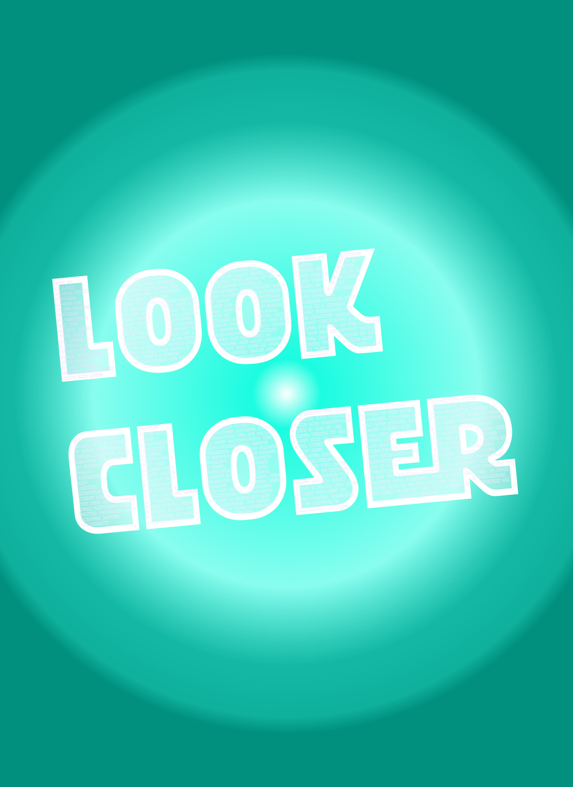

Concept
A simple sentence becomes a message about curiosity, attention and the things we miss when we move too fast.
creative / poster design
A personal poster project and a comment on the world: what would people notice if they stopped and looked closer?

idea
Look Closer is a poster I made in my free time. It is a visual comment on the world and on how easily people move past important details without really seeing them.
The idea is hidden inside the typography. Each letter contains small things that people should look closer at, turning the words themselves into something the viewer has to inspect.
focus
A simple sentence becomes a message about curiosity, attention and the things we miss when we move too fast.
The letters carry the meaning of the project, because the details inside them are part of the poster's message.
Strong scale, colour and contrast make the poster work both as a graphic object and as an invitation to inspect it.
visuals

next
This case belongs to the creative part of my portfolio, together with posters, paintings and visual experiments.
back to creative projects